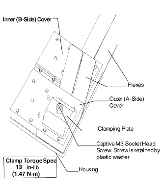

GEMS Proprietary Class: A
Direction 5117807-800, Rev# A
GEMS Proprietary Class: A |
When installing Detector Flexes to the MDAS backplane, it is very important to exercise all ESD precautions. Use of a ground wrist strap and finger cots is required, when handling the Detector Flexes.
Remove the Detector ESD Boots from 4 Detector flexes at a time.
Clean with alcohol pads to remove any dirt, debris or oils from electrical contacts.
| NOTE: | Alcohol prep pads and “lint free” pads can leave fibers on the cleaned surfaces. Inspect thoroughly to remove any fibers that may have been deposited. |
Install 4 flexes on the Housing and install the housing cover.
While holding the housing cover in place, install 2 clamp plates and torque the clamp plates to 13 in-lbs (1.47 N-m). This is an extremely critical torque spec. Too little, the electrical connection will not be good and produce intermittent opens, noise, or popping. Too much and you risk breaking the screw.
There have been tolerance stack-up measurements to determine the appropriate amount of compression to the elastomer to provide a reliable connection.
Illustration 1: Flex Housing and Clamping
